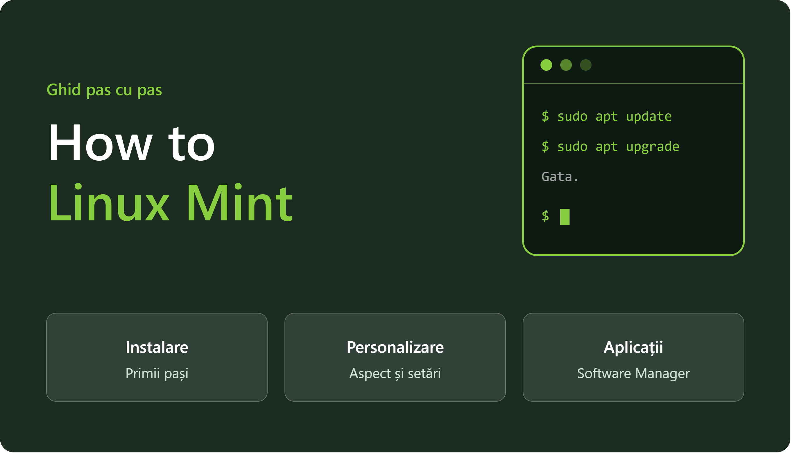

02 Cum să creezi un stick USB bootabil cu Linux Mint

După ce ai descărcat și verificat integritatea imaginii ISO Linux Mint, următorul pas este scrierea acesteia pe o unitate flash USB pentru a putea porni (boota) sistemul în modul Live sau pentru a efectua instalarea. Procesul necesită un stick USB de cel puțin 4 GB (recomandat 8 GB) și șterge complet datele existente pe acesta.
1. Pregătirea unității USB
Capacitate minimă: 4 GB (8 GB recomandat pentru versiunile recente).
Backup: Salvează toate fișierele importante de pe stick înainte de a începe, deoarece unitatea va fi formatată.
Fișierul sursă: Asigură-te că ai imaginea
.isoverificată (SHA256 și GPG) salvată local.
2. Metoda 1: Folosind USB Image Writer (în Linux Mint / Ubuntu)
Linux Mint include un utilitar grafic dedicat, simplu și sigur, ideal pentru începători.
Conectează stick-ul USB la calculator.
Deschide meniul principal și caută USB Image Writer (sau click dreapta pe fișierul
.isoîn managerul de fișiere → Make Bootable USB Stick).La câmpul Image, selectează fișierul
.isoLinux Mint descărcat.La câmpul To, selectează unitatea USB din lista derulantă.
Apasă pe Write și introdu parola de administrator (
sudo) când ți se solicită.Așteaptă finalizarea procesului și mesajul de confirmare înainte de a deconecta stick-ul.
3. Metoda 2: Folosind comanda dd în Terminal (Linux / macOS)
Metoda din linia de comandă este rapidă și nu necesită instalarea unor aplicații suplimentare, dar necesită atenție maximă la selectarea dispozitivului țintă.
Pasul 1: Identifică numele dispozitivului USB
Rulează comanda următoare înainte și după conectarea stick-ului pentru a-i identifica denumirea (de ex. /dev/sdb sau /dev/sdc):
lsblk
Atenție: Verifică cu strictețe capacitatea dispozitivului (
SIZE) pentru a nu suprascrie din greșeală hard disk-ul sau SSD-ul principal (/dev/sdasau/dev/nvme0n1).
Pasul 2: Demontează partițiile USB (dacă sunt montate)
Înlocuiește sdX cu litera corespunzătoare stick-ului tău (de exemplu sdb):
sudo umount /dev/sdX*
Pasul 3: Scrie imaginea ISO pe stick
Rulează comanda dd indicând calea către fișierul ISO și dispozitivul întreg (fără număr de partiție, adică /dev/sdX, nu /dev/sdX1):
sudo dd if=~/Downloads/linuxmint-22-cinnamon-64bit.iso of=/dev/sdX bs=4M status=progress oflag=sync
if=— calea către fișierul sursă.iso.of=— dispozitivul USB țintă.bs=4M— setează dimensiunea blocului de scriere la 4 MB pentru viteză optimă.status=progress— afișează progresul transferului în timp real.oflag=sync— asigură scrierea completă a datelor pe unitate înainte de încheierea comenzii.
4. Metoda 3: Folosind aplicații multi-platformă (Windows / macOS / Linux)
Dacă pregătești stick-ul de pe un alt sistem de operare, poți utiliza una dintre următoarele soluții:
| Utilitar | Sisteme suportate | Caracteristici principale |
| BalenaEtcher | Windows, macOS, Linux | Interfață intuitivă în 3 pași (Flash from file → Select target → Flash), verifică automat scrierea după finalizare. |
| Rufus | Windows | Rapid și ușor; la pornirea scrierii, dacă solicită modul de scriere, alege Write in ISO Image mode (recomandat) sau DD Image mode. |
| Ventoy | Windows, Linux | Formatează stick-ul o singură dată; ulterior poți copia direct mai multe fișiere .iso pe el fără rescriere. |
5. Pornirea (Bootarea) de pe stick-ul USB
Lasă stick-ul USB conectat și repornește calculatorul pe care dorești să instalezi Linux Mint.
Apasă tasta pentru Boot Menu imediat la pornire (de obicei
F12,F11,F8,F2sauEsc, în funcție de producătorul plăcii de bază/laptopului).Selectează unitatea USB din listă (preferabil opțiunea cu prefix UEFI, dacă sistemul suportă UEFI).
În meniul GRUB afișat, alege Start Linux Mint pentru a încărca sesiunea Live și a testa compatibilitatea hardware înainte de instalarea propriu-zisă.